| 日付 | 2013年5月18日（土） |
|---|---|
| 山域 | 三浦半島 |
| メンバー | 家族（長女・2歳） |
| 山行形態 | 子連れ日帰り |
| アクセス | 電車、バス |
| ルート (Map) | 田浦駅 (8:21) - (8:53) 田浦梅林 - (9:33) 乳頭山 - (10:59) 二子山 (11:53) - (12:55) 川久保 - (13:31) 長柄交差点 |
子供が電車に乗りたいと言い出したので
希望通り、久々に電車で山に行くことにする。
遠出をすると電車での移動が大変なので近場の山を選択、
三浦半島にある二子山に行ってみることにする。
マイカーでは行きにくい山なので都合がいい。
田浦駅に到着する。標高5m。
家の最寄駅から1時間弱で到着。子供はまぁ何とか大人しくしてくれていた。
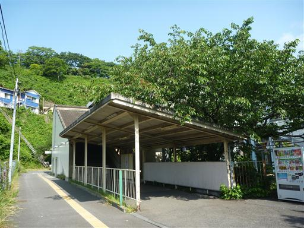
田浦の町の中を歩いていく。この辺りの道はどこも細くて曲がりくねっている。
この界隈で有名な田浦梅林までは標識が整備されているため迷うことはない。
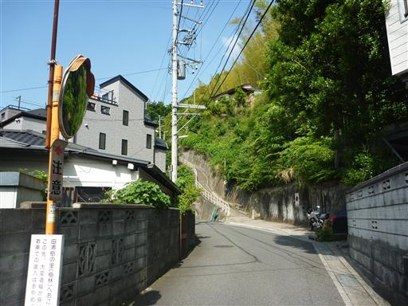
集落を離れ梅林に続く階段を登っていく。
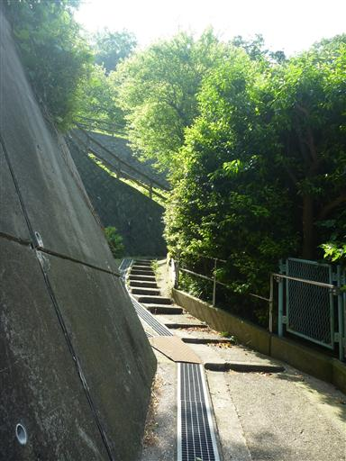
少し登ると眼下に展望が広がる。海のすぐ傍だが結構山がちな地形だ。
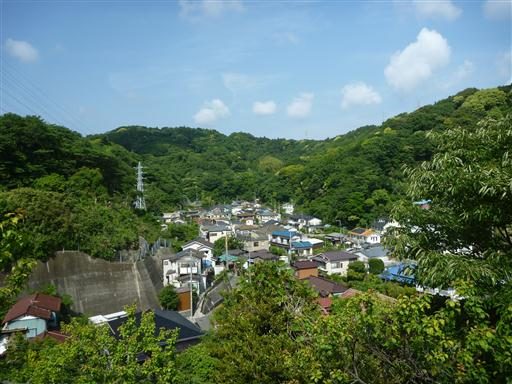
鳥居を潜って階段をどんどん登っていく。
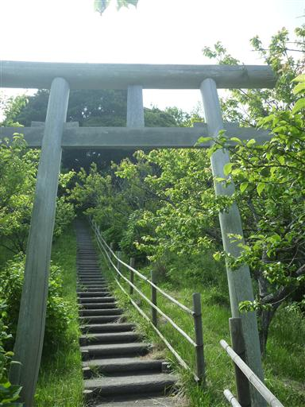
階段の途中で小さな祠が祀られている。
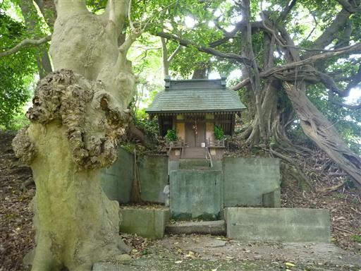
田浦梅林に到着。当然もう梅の花は咲いていない。
有名な観光地なのだが今は人影が全くない。
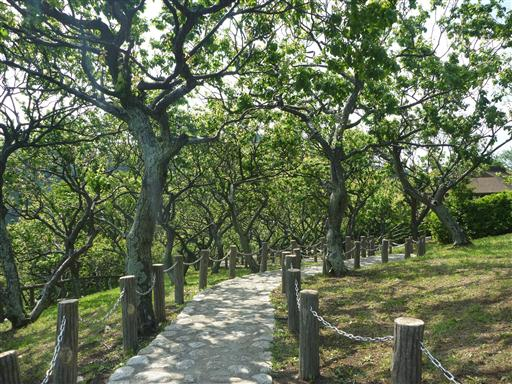
足元を見ると梅の実がいくつか転がっている。
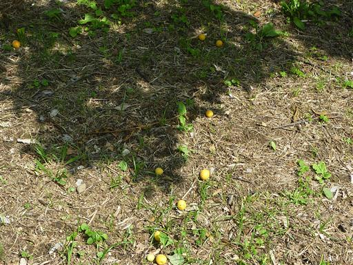
田浦梅林を過ぎると開けた草原に出てくる。ここも人影は全くない。
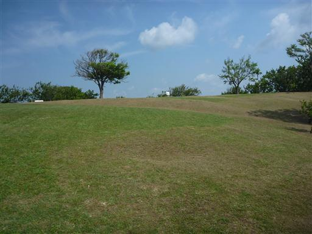
展望台があったので登ってみる。
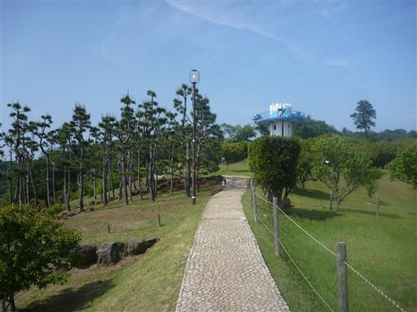
360度の展望が広がる。眼下に田浦梅林、遠くに横須賀港が見えている。
今日は晴れているのだが全体的に霞んでいてあまり視界がよくない。
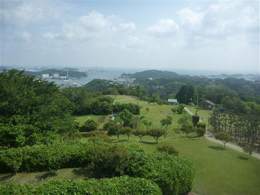
田浦梅林の奥から二子山方向に続く道へ進む。
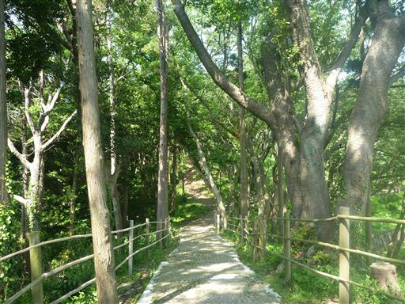
横浜横須賀道路に架かる古そうな橋を渡る。
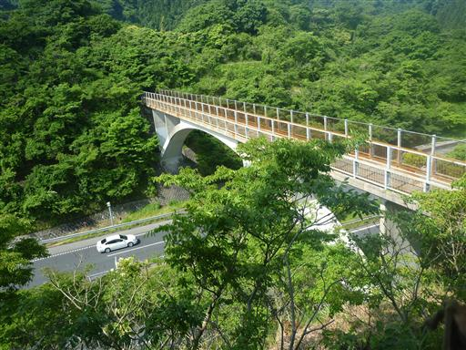
ここからが本格的な登山道だ。もう5月も半ばで、低い山だと草木が成長して鬱陶しい。
もう少し道が整備されていると思っていたのだが…
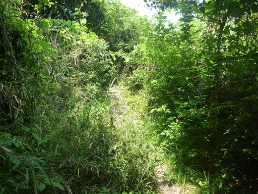
足元に咲くオカタツナミソウ。
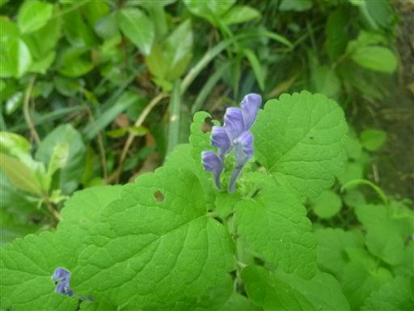
稜線に到着する。右に行けば二子山だが、左の乳頭山に寄り道することにする。
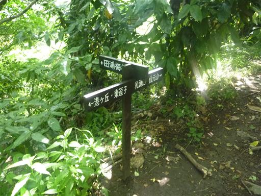
この稜線上の道は広くてよく整備されている。
田浦梅林から稜線までは誰とも出会わなかったが、この道では登山者をよく見かける。
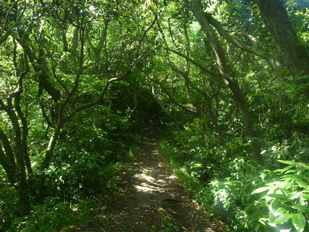
乳頭山の山頂に到着。樹林に囲まれた小さなピークだ。
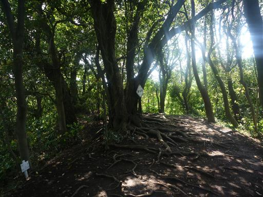
山頂からは一角だけ展望が望める。
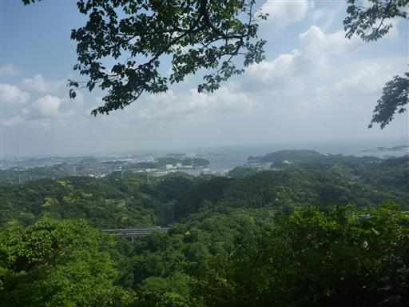
乳頭山近辺の登山道案内図。この辺りは道がかなり複雑に入り組んでいる。
今日は、登山道の記載があまりあてにならない地形図しか持ってきていないので結構辛い。
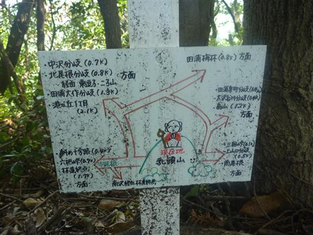
乳頭山を後にし田浦梅林からの分岐点まで戻ったら、二子山に向かって歩を進める。
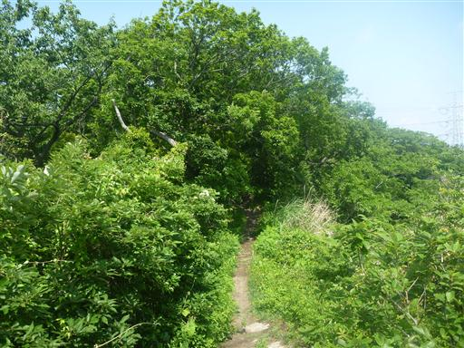
視界が開けたところで辺りを見渡してみる。山全体が濃い緑に覆われている。

登山道は案外細い。斜面が急なところもあるため子供を歩かせるには少々不安な場所だ。
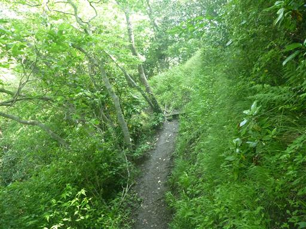
あちらこちらにウツギの白い花が咲いている。
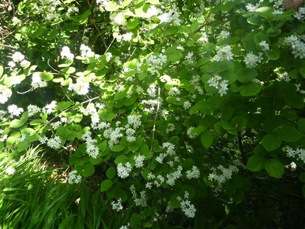
木に囲まれた森の中を歩いていく。アップダウンが少なく楽な道だ。
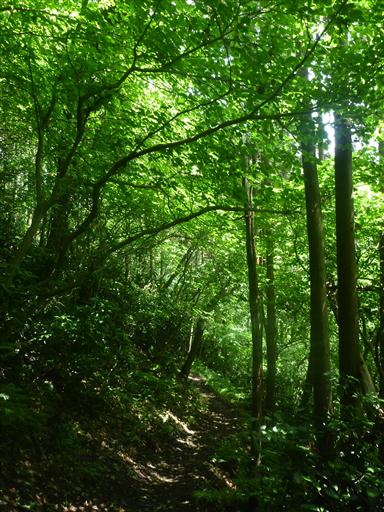
沢状の地形の場所にはシダ植物が繁茂している。
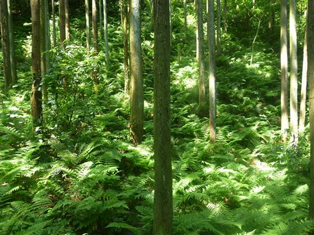
所々で道がぬかるんでいて歩きにくい。
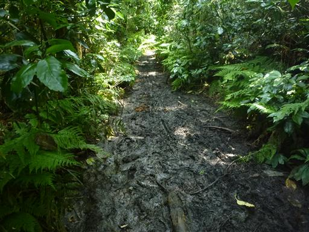
街から近く標高も200m程度の低い山域なのだが、よく自然が保たれていて
立派な木がたくさん立ち並んでいる。
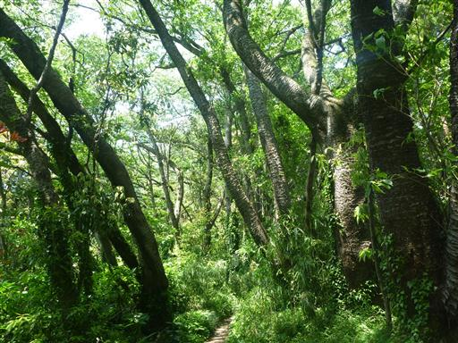
艶めかしい姿の木を発見。くねり具合がなかなか良い。
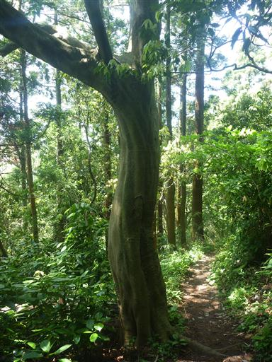
足元には何かの実のようなものが無数に落ちている。
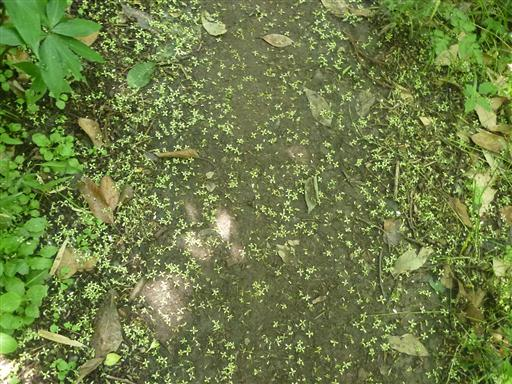
二子山に近づくと大きな道に出てくる。山頂の電波塔に続く林道のようだ。
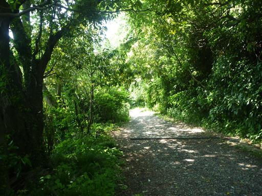
二子山の山頂に到着する。標高208m。
埋まっているのは一等三角点だ。

山頂には小さな展望台がある。
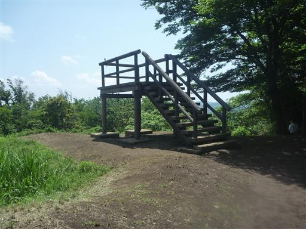
展望台の上に小さな山頂標識が設置されている。
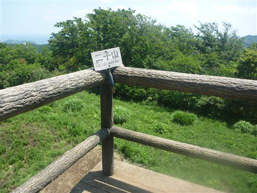
展望台からはそれなりの景色が広がるが、空気が澄んでないこともありこれといったものは見えない。
山頂で母子登山者がいて少し話をする。子供はうちと同じ2歳なのだが、
すでに登山教室に入って週2回3時間程度歩いているらしい。すごい体力だ。
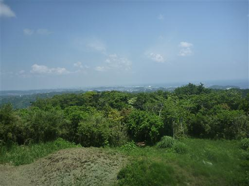
二子山というだけあって山頂は2つある。昼食をとった後、もう1つのピークを訪れる。
こちらの山頂は展望が全くなく、人影も全くない。
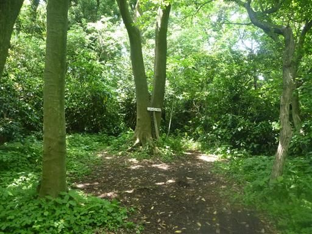
二子山から川久保の方面に下山する。この辺りも立派な木が多い。
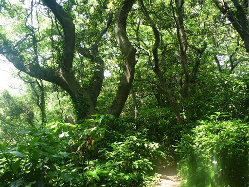
この道はメインロードではないようで藪がかなり鬱陶しい。
分岐点が何度かあったが標識はなく、地形図を頼りに進んでいく。
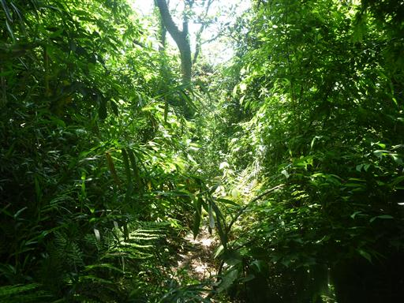
登山道から左に伸びる踏み跡を発見。木の枝でとおせんぼをしているが、
目指す阿部倉山に続く道だと判断し、踏み跡に入っていく。
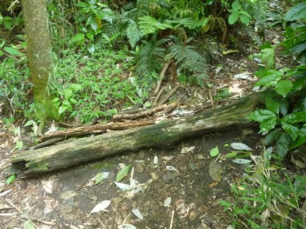
しばらく歩くとぽっかり開けた空間に出てくる。
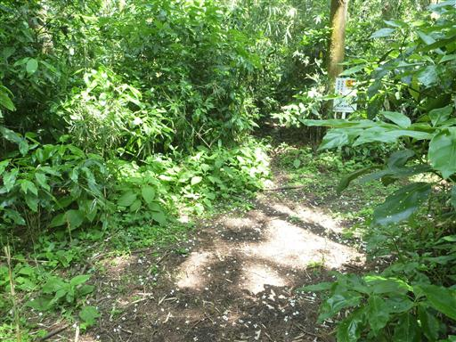
辺りを見渡すと、想定通り阿部倉山の山頂標識を発見する。

分岐点まで戻ってきて顔をあげると、なんと標識が設置されている。
なぜこんな目に付きにくい場所に設置したのだろう…
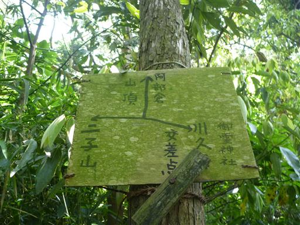
あとは標高差150m程を下るのみ。あっという間に下山する。
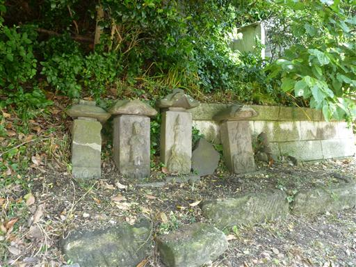
下山地点から振り返って山を見上げる。こんもりとした盛り上がりだ。

車道を30分ほど歩いて長柄交差点バス停に到着する。標高20m。
逗子駅まで歩く予定だったが、ここ最近親子2人登山で重い荷物を
何度も背負っていたため肩と腰が悲鳴を上げている。
バス停を見つけたところでギブアップ。幸いバスの本数は多い。
子供は重くなる一方で、そろそろ歩かせないとこちらの体がもたないことを実感した登山だった。
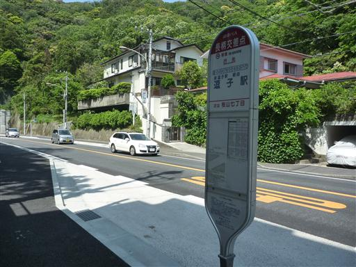